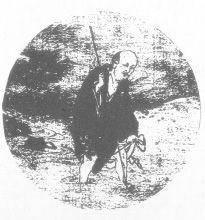

TIME AND SPACE
Exercises
1. Ask yourself: Where am I?
Answer: Here.
Ask yourself: What time is it?
Answer: Now.
Say it until you can hear it.
2. Set alarm clocks or design your day or put up notes on the wall so that a number of times during the day when you are in the midst of various occupations you confront yourself with the questions:
(a) Where Am I? and then answer (see answer below)
(b) What time is it? and then answer (see answer below)
Each time you do this, try to feel the immediacy of the Here and Now. Begin to notice that wherever you go or whatever time it is by the clock . . . it is ALWAYS HERE AND NOW. In fact you will begin to see that you can’t get away from the HERE and NOW. Let the clock and the earth do their “thing” . . . let the comings and goings of life continue . . . But YOU stay HERE and NOW. This is an exercise to bring you to the ETERNAL PRESENT . . . where it all is.
3. For specific periods of time focus your thoughts in the present.
DON’T THINK ABOUT THE FUTURE.
JUST BE HERE NOW.
DON’T THINK ABOUT THE PAST.
JUST BE HERE NOW.
4. Reflect on the thought that if you are truly Here and Now—
(a) it is ENOUGH, and
(b) you will have optimum power and understanding to do the best thing at the given moment. Thus when “then” (the future) becomes Now—if you have learned this discipline—you will then be in an ideal position to do the best thing. So you need not spend your time now worrying about then.
5. Reflect on the fact that you can plan the future in the Here and Now as long as when then is Now . . . you are fully Here and Now. Seem paradoxical? Of course! Keep reflecting!
6. “Think that you are not yet begotten, think that you are in the womb, that you are young, that you are old, that you are dead, that you are in the world beyond the grace, grasp all that in your thought at once, all times and places . . .”—Hermetica
Answers: (a) HERE (b) NOW
Potent Quotes
“The Oversoul is before Time, and Time, Father of all else, is one of His children.”—Emerson
“Thought is time, and time creates fear.”
“How are we to know that the mind has become concentrated? Because the idea of time will vanish. The more time passes un-noticed the more concentrated we are . . . All time will have the tendency to come and stand in the one present. So the definition is given, when the past and present come and stand in one, the mind is said to be concentrated.”—Vivekananda
“A Zen student must learn to waste time conscientiously.”—Suzuki Roshi
“If we could feel the idea of time itself, of all our life lying in Time, the momentary I of passing time would not have the same hold over us.”—Nicoll
